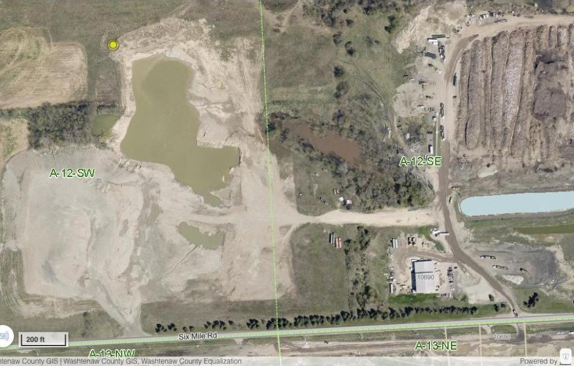

Record as of Nov 24, 2026
Questions about the proposed new landfill that the public record has not answered. Each one names the record it comes from. When an answer arrives, it moves to the record with a link.
Questions marked Asked were sent to MMPC members on November 18, 2026. They are shortened here from the text as sent, with the same facts.
Where will boundary gas probes go at the new site, will they sit between the waste and the homes across Napier Road, and will any of the property for the new landfill fall within the county plan's 300-foot park setback?GFL's September 9 drawings for the proposed new landfill show gas wells but not boundary probes. Across Napier Road from the new site are a township park with community gardens, the historic Thayer schoolhouse, and homes. Probes east of Napier at the current site have read above the explosive limit for years.
What has GFL changed in the proposed new landfill's design so its gas wells don't end up the same way?EGLE's June 2026 inspection found about half of the landfill's vertical gas wells showing signs of impairment, and about 200 pumps have been installed to remove liquid from the wells.
How will the new landfill's base be kept separate from groundwater that feeds Johnson Creek?GFL's wetland pre-application says the proposed new landfill would permanently fill about 33 acres of regulated wetlands, and those wetlands continue onto adjacent land. EGLE has described the stream on that land as "a headwater stream of Johnson Drain and the Rouge River." Johnson Drain, also called Johnson Creek, is described as a groundwater-fed, cold-water trout stream. The September 9 drawings show the base dug well below today's ground. A slurry wall like the current site's, or something else? How will the creek and nearby residents' well water be protected?
Is anything being excavated in the soil borrow and stockpile area north of Six Mile Road now, and what approvals cover that work and its ponds?GFL's September 9 site plan labels a “current soil borrow and stockpile area” on GFL-owned land north of Six Mile Road. GFL’s 2022 Operations Plan names “a proposed soil borrow area on the Arbor Hills property north of Six Mile Road” as a source of daily cover for the landfill.
How will the leachate pipe across Six Mile Road be watched for leaks, and what happens if it fails?Under the law, rain that falls on open waste in the new cells is considered leachate and must be treated. The September 9 drawings show it traveling by double-walled pipe across Six Mile Road to the treatment facility. A 2022 leachate release reached a tributary of Johnson Creek.
How will GFL intercept stormwater from the active area and send it to the leachate treatment system, rather than to the basins that drain to Stream S1?In 2022, EGLE found leachate mixed with stormwater had entered the detention pond and drained to a tributary of Johnson Creek. The September 9 drawings show two retention basins at the new site with outlet channels to the headwater stream S1, another tributary of Johnson Creek.
Which PFAS pretreatment method did GFL choose, is it on schedule, and how will it handle the new site's added leachate?GFL told YCUA in August 2025 that its pretreatment system "does not consistently treat leachate below the new Maximum Limits for PFOA and PFOS," that it had pilot-tested two PFAS treatment methods, and in May 2026 that a permanent system was expected by February 2027.
Is closing or removing any part of Six Mile Road still under consideration?GFL's alternatives analysis for the wetland pre-application studied layouts that included removal of Six Mile Road "to create continuous landfill airspace." Six Mile Road is designated a County Primary Road by the Washtenaw County Road Commission (Salem Township road map).
Which NPDES permit would cover the new outfall to Stream S1, and when will GFL apply for it?GFL's narrative calls the channel "NPDES-permitted" and places the ponds on GFL-owned land north of Six Mile Road under permit MI0045713, which EGLE lists for the Arbor Hills Remediation Area. No NPDES application for GFL-owned land north of Six Mile Road is on the public record. GFL's 2026 renewal application for MI0045713 gives the facility location as 42.393948, -83.558087, which is about 0.9 mile (1.4 km) south of Six Mile Road and south of the existing landfill, even though the address listed with it is 10159 West Six Mile Rd. Location map
Will EGLE review a landfill on GFL-owned land north of Six Mile Road as an expansion of the existing landfill or as a new disposal area, and which siting rules follow from that?GFL told the county committee on September 9 that it had solicited legal opinions that the project qualifies as an expansion rather than a new disposal area. Six Mile Road, which separates this land from the existing landfill, is designated a County Primary Road by the Washtenaw County Road Commission (Salem Township road map). EGLE's November 2024 Advisory Analysis listed the construction-permit requirements, which include a demonstration of consistency with the county Materials Management Plan, an environmental assessment, a hydrogeological report and monitoring plan, topographic maps, engineering plans and reports, operations plans and construction quality assurance plans, with the original permit's studies "submitted again" and "updated to meet current conditions at the site."
Streams S1 and S2 appear to be inland streams as defined in Part 301. If during a field visit that is validated, will EGLE require GFL’s active work area to stay at least 400 feet from both streams, as R 299.4412(5)(a) requires?EGLE’s Water Resources Division wrote that it would be accurate to call S1 “a headwater stream of Johnson Drain and the Rouge River.” GFL’s 2024 delineation report maps S1 as a perennial stream, about 1,040 feet, on GFL-owned land north of Six Mile Road.
What approval covers the soil borrow area and ponds on GFL-owned land north of Six Mile Road?GFL’s September 9 site plan labels it a “current soil borrow and stockpile area.” The only water permit on the public record for this land, WRP043450, covers 0.032 acre of temporary timber matting to drill one monitoring well.

Was the Section 12 monitoring well drilled under WRP043450, and will its boring log and water levels be made public?The permit allowed one groundwater monitoring well on GFL-owned land north of Six Mile Road in November 2024. Its water levels would show how high groundwater sits under the proposed cells.
When GFL files the full wetland application, will EGLE hold a public hearing, and how will nearby residents be notified?EGLE's October 27 letter says it can add a resident's letter to the application file when an application is received.
Would a new stormwater outfall to Stream S1 need an individual NPDES permit with public notice, or could it be added under the existing general-permit certificate without a comment period?S1 flows to Johnson Drain, which EGLE protects for coldwater fish species. In 2021 EGLE cited the existing site's stormwater permit for PFOS (VN-011821). The Monitor asked EGLE on Oct 22 to be notified of any new outfall from GFL-owned land north of Six Mile Road.
Would any new outfall from GFL-owned land north of Six Mile Road, such as GFL's proposed outfall to Stream S1, be covered by permit MI0045713?GFL's Attachment 1, p. 3, says the waterbodies on GFL-owned land north of Six Mile Road are "regulated under an active National Pollutant Discharge Elimination System (NPDES) permit (Permit No. MI0045713)." The only mention of a waterbody on GFL-owned land north of Six Mile Road found in that permit's record is the compost pond, in EGLE's 2022 Basis for Decision Memo for the permit, p. 4, item 7: "Compost runoff storm water not permitted with this reissuance. a. The Compost Pond does not have an outlet. It provides a permanent storage to the runoff that comes from the compost pad. Upon further evaluation, the Department determined that there are no connections from the storm water pond to surface waters." Basis for Decision Memo
Would permit MI0045713 allow additional discharges through Outfall 001 if water were routed there from GFL-owned land north of Six Mile Road?The permit authorizes "a maximum of 0.1 MGD of treated groundwater from Monitoring Point 001A through Outfall 001," December 1 through April 30 only, and does not require a stormwater plan. EGLE's 2022 Basis for Decision Memo removed compost runoff stormwater from the permit. GFL's Attachment 1 says the waterbodies on GFL-owned land north of Six Mile Road are regulated under this permit. Permit · Basis for Decision Memo
GFL told EGLE that the waterbodies on its land north of Six Mile Road are covered by NPDES permit MI0045713. Does that permit, or any other permit, cover Stream S1?In its application to EGLE (submission HQA-WX1H-7R9J4, Attachment 1, filed Aug 20, 2026, p. 3), GFL wrote: "The two streams are considered likely regulated under NREPA Part 301; however, neither have a watershed greater than two square miles, and therefore do not have Part 31-regulated floodplains. The waterbodies identified on-site were all part of the site stormwater system regulated under an active National Pollutant Discharge Elimination System (NPDES) permit (Permit No. MI0045713) and are considered non-regulated/exempt under the NREPA [324.30305(4)(b)]." Permit MI0045713 covers treated groundwater from the Arbor Hills Remediation Area through Outfall 001, south of Six Mile Road. EGLE has described S1 as "a headwater stream of Johnson Drain and the Rouge River," and EGLE protects Johnson Drain and its tributaries for coldwater fish species. Attachment 1 · Permit
Does the pond in the soil borrow area discharge anywhere, and is it covered by permit MI0045713 or any other permit?GFL’s Attachment 1 says the waterbodies on its land north of Six Mile Road are part of a stormwater system regulated under permit MI0045713. EGLE’s 2022 Basis for Decision Memo for that permit (p. 4, item 7) says: “Compost runoff storm water not permitted with this reissuance. a. The Compost Pond does not have an outlet. It provides a permanent storage to the runoff that comes from the compost pad. Upon further evaluation, the Department determined that there are no connections from the storm water pond to surface waters.” The pond in the soil borrow area does not appear in the county’s 2022 aerial; a small dug basin shows in March 2024, and by 2026 it is open water inside the excavation (aerial on Q12). If this pond also has no outlet, is it treated like the compost pond, with no discharge allowed under MI0045713? If it does discharge, under what permit? Basis for Decision Memo · Attachment 1
Want EGLE to answer the EGLE questions? Write to EGLE.